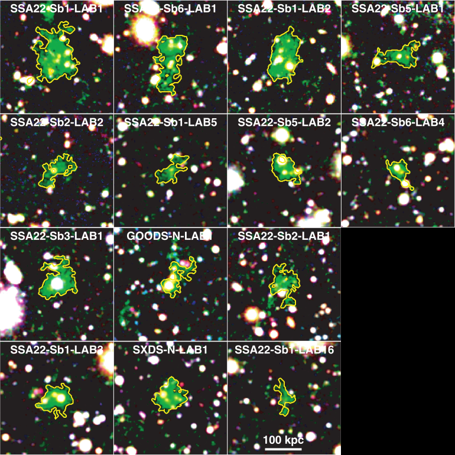
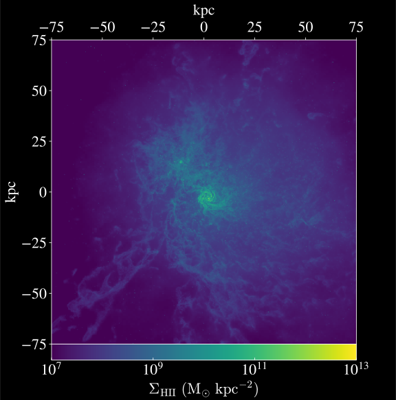

The Origin of Lyman-alpha Blobs in Cosmological Galaxy Formation Simulations
Ben Kimock, Desika Narayanan, Aaron Smith, Xiangcheng Ma, Robert Feldmann, Daniel Angles-Alcazar, Volker Bromm, Romeel Dave, James Geach, Phillip Hopkins, Dusan Keres
saethlin.github.io/aas235.html
kimockb@ufl.edu
What is a Lyman-alpha Blob?
Massive: (~100 kpc "in extent")
Luminous: (~1043 erg/s)

What Could Power Blobs?
Model Inputs


Ionization State


Lyα Emissivity


So... Is it a Blob?


So... Is it a Blob?

What is the source of Lyα?
Collisional excitations
...not necessarily cooling streams
But what about the AGN?
Ionization State (without/with AGN)

What is the source of Lyα (with AGN)?

Escape fraction depends on source
Elevated ionization and escape fraction
Suppression of collisional excitation
RT Matters!
Escape fraction is not close to unity
Strong line-of-sight dependence
Spectrum is not easy to interpret
Conclusions
Our model (zooms + ionizing MCRT + Lyα MCRT) reproduces observations of LABs
LABs may be powered by emission from collisional excitations, but not necessarily cooling streams
AGN have a dramatic impact on what physical mechanism powers LABs
The Lyα escape fraction from LABs is highly orientation-dependent, particularly in the presence of AGN
RT Matters!

Escape fraction is not close to unity
Strong line-of-sight dependence
Spectrum is not easy to interpret